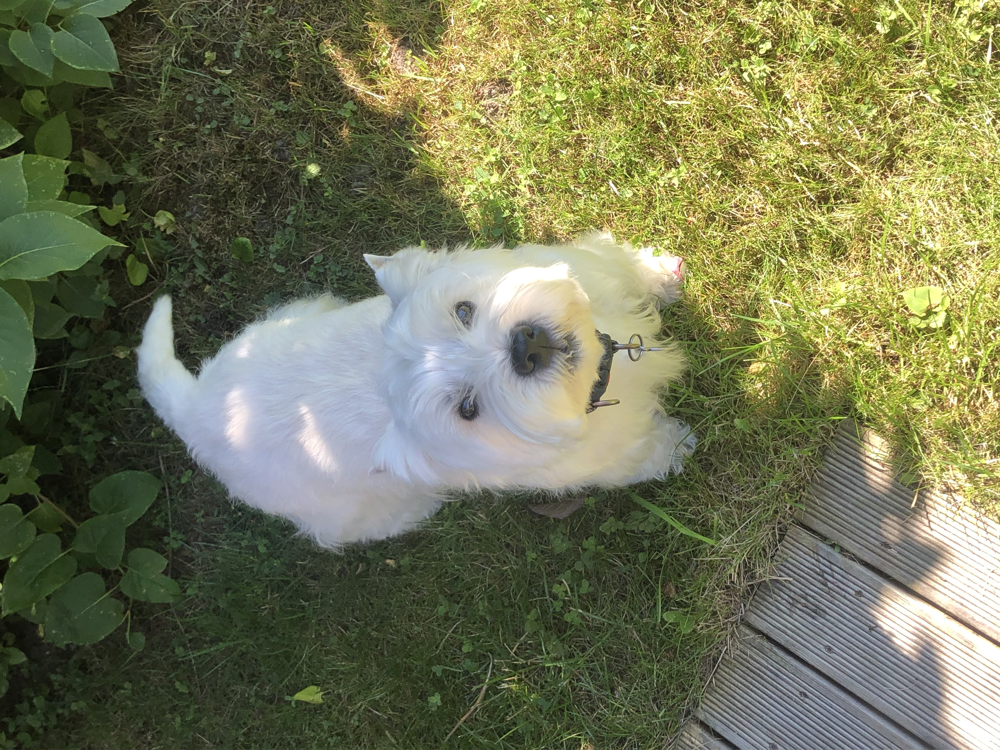
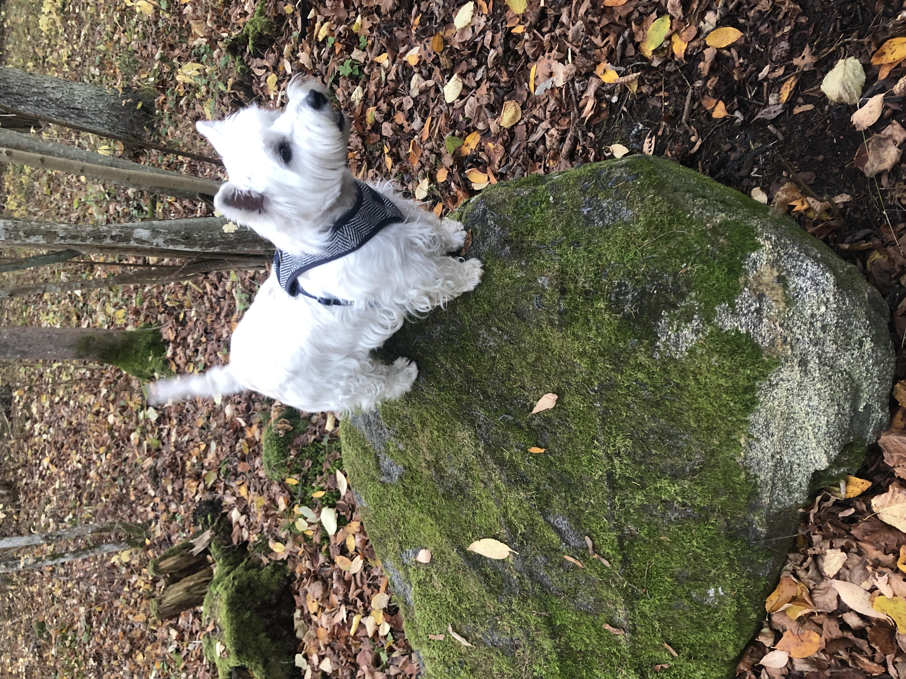
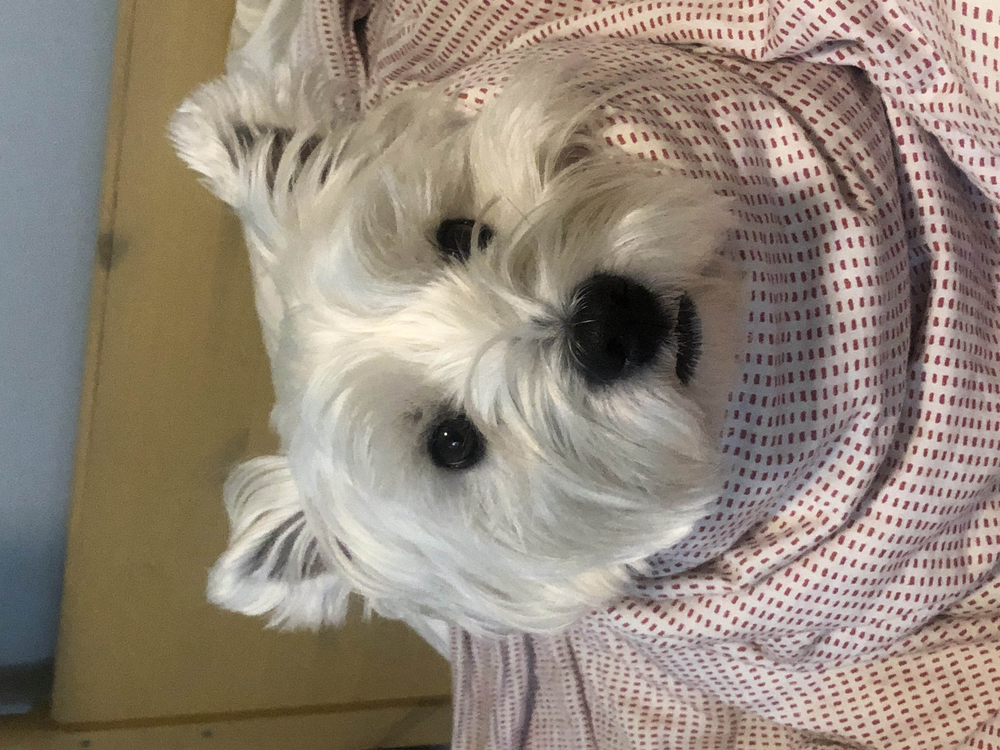

Ta on meie pereliige olnud juba peaaegu 4 aastat. Tal on kaks pale - jube armas, pehme ja valge sõbralik ning taibukas koer või väga sopane haisev nähvits. Nii ühel kui teisel moel armastatakse teda tohutult. Nora on päris nutikas, kuigi jubedalt laisk koer. Ta oskab igasuguseid trikke teha, mille hulgas on lisaks kohustuslikele “istu” ja “lama” käsklustele ka näiteks “slaalom”, kus Nora poeb kõndiva inimese jalgade vahelt slaalomis läbi, ning ka “sitsi”, kuigi seda teeb ta omamoodi, lisades sitsimisele veel pirueti otsa.
Nora on kõige vähem ablas koer maailmas. Selleks, et teda oma õhtusööki sööma saada, on vaja talle tema kuivtoiduga serveerida ka värskelt praetud hakkliha ning törts hapukoorega, muidu ei vaata ta oma toidukausi poolegi. Hea meelega noolib ta aga alati puhtaks iga külalise näo ja käed.
Nora armastab üle kõige rannas käia. Seal teeb ta ükskõik mis ilmaga merevees alati, vahepeal väikese ja vahepeal suure, supluse. Ta ei ütle ära ka liivas kaevamisele ning püherdamisele, kuid eriti meeldib talle, kui keegi mingisugust oksa või käbi talle äratoomiseks viskab. Seda lumivalget koera on peale sellist käiku alati suur rõõm küürida…
Nora armastab tohutult sünnipäevi. Niipea, kui ta kuuleb, et hakatakse laulma sünnipäevalaulu, läheb ta täiesti pöördesse ning pakub kingisaajale abi paki avamisegagi. Tema enda sünnipäeval pakitakse just sellepärast tema kingid alati korralikult pakkepaberisse, et tal oleks põnev neid lahti rebida. Ta on iga kord väga tänulik ning ei jäta uut mänguasja enne rahule, kui ta selle kuidagi puruks rebinud on.
